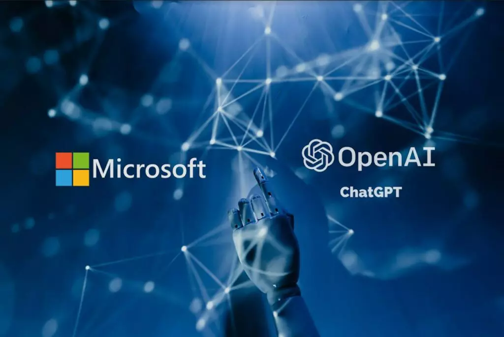

Más información
Soy CEO de la empresa OpenAI, empresa de investigación y despliegue del uso de la inteligencia artificial de manera beneficiosa. Las principales areas de enfoque son los modelos generativos, la seguridad, la robótica y el lenguaje natural. Además, se ofrece un servicio de API para construir modelos propios y personalizados OpenAI se fundó en 2015 por Ilya Sutskever, Greg Brockman, Trevor Blackwell, Andrej Karpathy y con Sam Altman y Elon Musk como miembros iniciales de la junta (Poner enlaces a biografias de cada uno)
Datos de interes
2020 WorldCoin (proyecto de criptomoneda biométrica)
mediante el reconocimiento del iris garantiza la privacidad de cada usuario
Colaboracion con Microsoft, los sistemas de OpenAI se ejecutan en una plataforma basada en Azure (sistemas Cloud)

El 15 de febrero se presento el generador de texto a video Sora